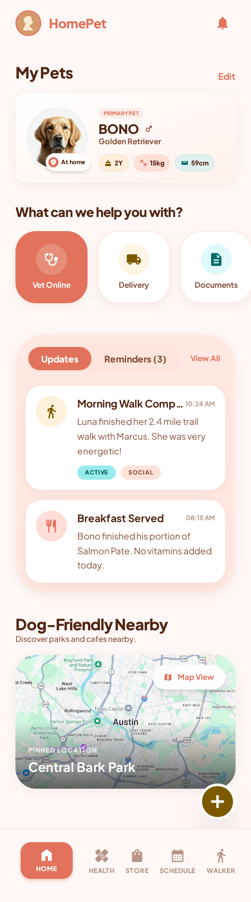
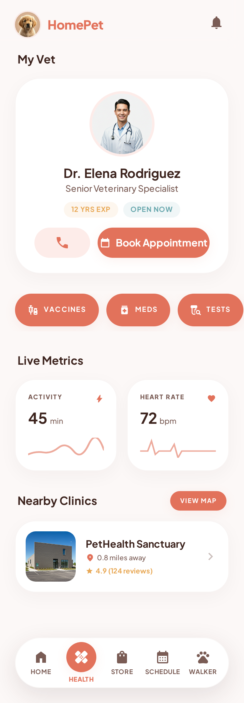
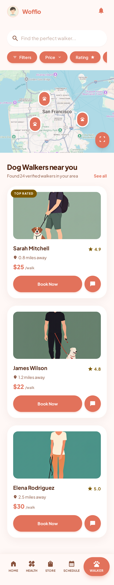
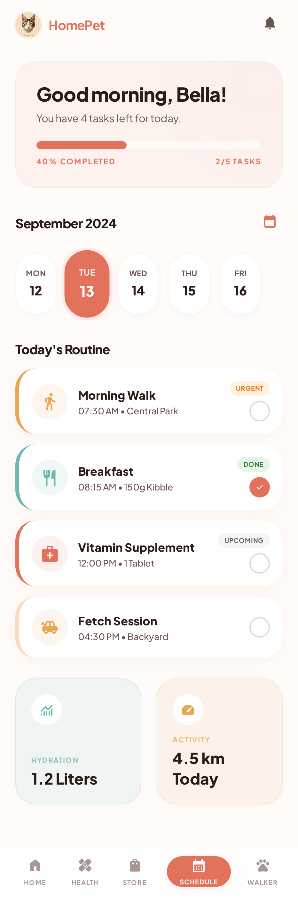
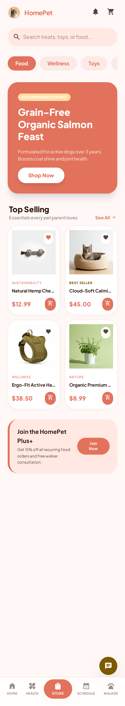
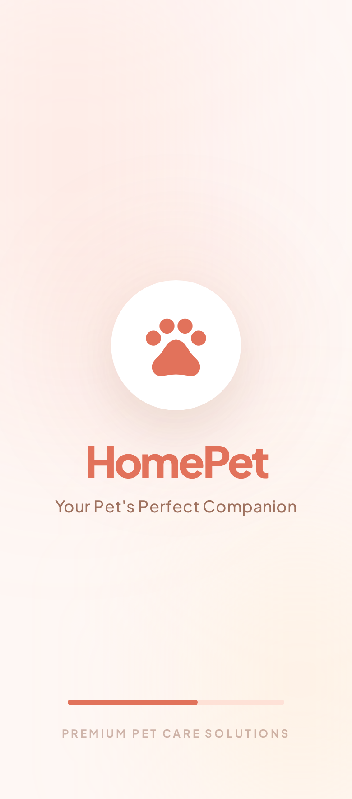

Dog owners juggle 4+ apps for health, walkers, and vet reminders — and still miss critical appointments. Woofio replaces them all with one platform families can trust.






Israel's pet care industry generates ₪3.2 billion annually — but the user experience is stuck in 2015. Owners manage health records in WhatsApp screenshots, book walkers through Instagram DMs, and track medications on fridge notes.
67% of dog owners missed a critical vet appointment last year. 43% discovered health issues too late because symptoms weren't tracked consistently.
This isn't just inconvenience — it's a welfare problem hiding behind fragmented tools.
Designing where user needs and business goals overlap
One platform that turns dog care from a solo burden into a shared family responsibility — health, scheduling, services, and food delivery in one place.
Research validated some assumptions — and completely overturned others.
Key survey insights grouped into four clusters that shaped every design decision.
Five critical challenges surfaced from the survey, ranked by severity:
Despite different lifestyles and breeds, every owner shared the same struggle. I distilled it into a single Problem Statement.
Dog owners struggle to find reliable, trustworthy pet care when busy or traveling. They can't verify caretaker quality and juggle fragmented tools for health, walking, and grooming — leading to constant stress and missed care needs.
From that problem, I formed a testable Hypothesis Statement to guide design decisions.
we build a unified platform that lets dog owners find verified walkers and sitters, track their pet's health in one place, and coordinate care across the whole family
we can reduce the anxiety of leaving their dog with strangers, eliminate forgotten vet visits and medications, and make pet care feel effortless even on the busiest days
I mapped a typical day for a busy dog owner to pinpoint where the pain lives.
Morning is chaotic — kids need breakfast, the dog needs feeding, no time for a proper walk. The commute is spent scrolling Facebook groups for a last-minute walker. At work, constant worry: Did the walker show up? Is the dog okay? By evening — exhaustion, guilt, and a forgotten vet appointment.
One app where the family coordinates all care. Verified walkers bookable in seconds, health records always current, live GPS tracking during walks. Smart reminders for vaccinations and medications. The whole family sees who's responsible — pet care becomes a shared joy.
Research insights framed as "How Might We" questions across three themes:
Each screen maps to a research pain point. The app has 13 screens total — these five represent the core value: health tracking, family care, trusted services, smart scheduling, and shopping.
Replaces the scattered notes and vet-only records 60% of owners rely on. One screen for vet info, live metrics, medical services, and nearby clinics.
Final Design
The heart of Woofio: a shared family dashboard where every member sees details, updates, and reminders — so no one carries the full load.
Final Design
For the 20% who rely on external help and everyone who travels — find, compare, and book certified walkers by price, rating, distance, and availability.
Final Design
AI-powered daily planner for walks, meals, and activities — directly addressing the rigid schedule frustration owners reported.
Final Design
Based on user research and pet care industry benchmarks: